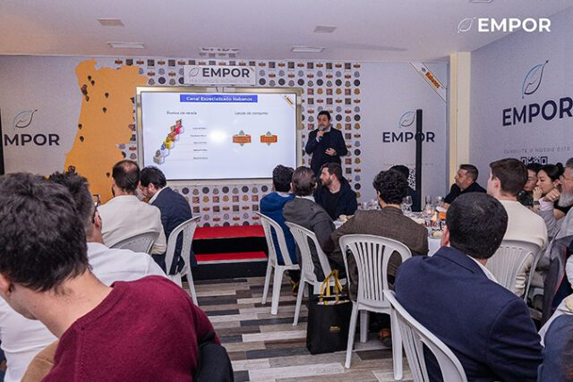

モンテクリストとS.T.デュポンの共同作ヒュミドール「L'Esprit（レスプリ）ル・クレピュスキュール」が、ポルトガル市場に披露されました。ハバノスS.A.の公式発表によると、披露の場は3月5日に開かれた第6回エンポル・ハバノス・モーメンツです。
ヒュミドールにはプレシオソス型（50×145mm）の葉巻を50本収納でき、世界200台限定。併せてL'Espritワインコレクションと、シガリロ「コイーバ ワイド・ショート」も紹介されました。

写真：Habanos S.A. — ポルトガルでの披露イベント会場
モンテクリストとS.T.デュポンの共同作ヒュミドール「L'Esprit（レスプリ）ル・クレピュスキュール」が、ポルトガル市場に披露されました。ハバノスS.A.の公式発表によると、披露の場は3月5日に開かれた第6回エンポル・ハバノス・モーメンツです。
ヒュミドールにはプレシオソス型（50×145mm）の葉巻を50本収納でき、世界200台限定。併せてL'Espritワインコレクションと、シガリロ「コイーバ ワイド・ショート」も紹介されました。